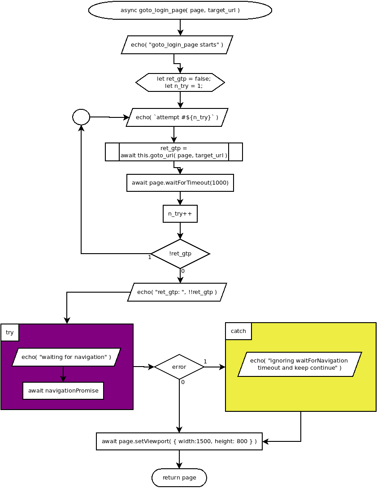

async goto_login_page( page, target_url )
Flowchart

Code
async goto_login_page( page, target_url ){
// go to login page
echo( "goto_login_page starts" );
let ret_gtp = false;
let n_try = 1;
do{
echo( `attempt #${n_try}` );
ret_gtp = await this.goto_uri( page, target_url );
await page.waitForTimeout(1000);
n_try++
}while( !ret_gtp );
echo( "ret_gtp: ", !!ret_gtp );
try{
echo( "waiting for navigation" );
await navigationPromise;
} catch {
echo( "ignoring waitForNavigation timeout and keep continue" );
}
await page.setViewport( { width:1500, height: 800 } );
return page;
}
Refers to:
async goto_uri( page, url )